Chapter 6: Import / Export Capabilities

I M E X
I m p o r t / E x p o r t M o d u l e
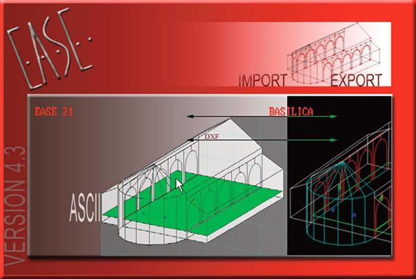
143
EASE 4.3 User’s Guide & Tutorial

Chapter 6. Import / Export Capabilities
Introduction
The IMEX Import & Export Module included in EASE JR and EASE allows a wide variety of different file types to be imported into the pro-gram and most EASE files to be exported in a number of formats.
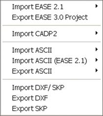
EASE 2.1, CADP2, ASCII, Google SketchUp and AutoCAD DXF Files can all be imported, while most EASE 4.3 data files can be exported to other programs as either Google SketchUp, AutoCAD DXF or ASCII Files, or exported directly to EASE 3.0. EASE 3.0 Files open automatically in 4.3 and do not need to be imported.
To open the IMEX Import/Export Module select Import/Export from the File pull down menu in the Main EASE screen. When the IMEX window opens, open the Tools pull down menu shown here.
Note that if you enter the IMEX module as a “stand alone” module (without a project loaded) the Export listing will be grayed out.
Import EASE 2.1
To import existing EASE 2.1 files, select Import EASE 2.1 to open the sub-menu shown here: The first three choices are used to Import old EASE 2.1 projects into 4.3. The first option, Project / Global Base will install the EASE 2.1 Loudspeaker and Material database files that are a part of the EASE 2.1 project file into the EASE40Data Global Speaker and Material database folders.
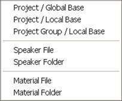
The second option, Project / Local Base, will install the EASE 2.1 Loudspeaker and Material database files along with the project files. It allows you to keep the old database files separate from the newer database files.
The third choice, Project Group / Local Base is used to import a group of 2.1 project files into 4.3. Note that the data files will be kept separate from the EASE 4.3 database files.
The second set of import choices, Speaker File and Speaker Folder, allow existing EASE 2.1 Loudspeaker files to be imported into 4.3. Speaker File imports a single loudspeaker data file, while Speaker Folder imports a group of loudspeaker data files. The Speaker File method is recommended since it provides you with more control over the import routine. Note that all imported loudspeakers will be marked "Non-Authorized."
Material File and Material Folder perform the same functions for Wall Materials. In all cases, make your selection and then follow the Prompts.
Export EASE 3.0 Project
Export EASE 3.0 Project provides a means of converting and exporting an EASE 4.3 Project File as an EASE 3.0 Project File. Note that this option is not available unless a Project has been loaded into the program.
The conversion, however, is not always a perfectly smooth one and some editing of the 3.0 Project File may have to be done. Also note that none of the 4.3 Data Files, (Loudspeakers, Wall Materials, etc.) will be exported. They cannot be converted from 4.3 to 3.0 files. This means the loudspeaker and materials used in the 4.3 project must exist in the 3.0 Databases as 3.0 files
EASE 4.3 will export the converted Project file as a Packed (zipped) file. When installing it in 3.0, make sure the Base File Find option is checked. Then EASE 3.0 will attempt to reassign the 4.3 Wall Material and Loudspeaker pointers.
144
Chapter 6: Import / Export Capabilities

Import CADP2
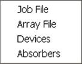
Import CADP2 is used to import existing CADP2 Job Data into EASE 4.3. Click on Import CADP2 to open the sub-menu shown here, then select the file type and follow the prompts.
Note that CADP2 Devices and Absorbers should be imported first, Array Files next and then the Job File.
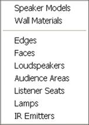
Import ASCII
Import ASCII allows "Comma And Quotes-Delimited" ASCII Files created by spread sheet programs for Speaker Models, Wall Materials, Lamps and IR Emitters to be imported into the program. Edges, Faces, Loudspeakers, Audience Areas and Listener Seats ASCII files created by EASE 3.0, 4.0, 4.1, 4.2, and 4.3 can also be imported.
Select Import ASCII, then make your selection from the sub-menu shown and follow the Prompts.
Note that the file name extension filter is different for each item. Examples of properly formatted ASCII files can be viewed by using Windows Explorer to browse to Program Files/EASE 4.3/EasePath/Exam-ples_ASCII.

Import ASCII (EASE 2.1)
ASCII files generated by EASE 2.1 are formatted differently than the ones created by EASE 3.0 and EASE 4.3. The Import ASCII (EASE 2.1) option opens the sub-menu shown here to allow these files to be imported into EASE 4.3.
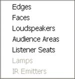
Export ASCII
Export ASCII allows EASE 4.3 project files to be exported in ASCII format for use in other programs such as Word or Excel. Note that this option will not be available unless you have loaded a project into the program. Then select Export ASCII and make your choice from the sub-menu shown below.
Import DXF / SKP
Import DXF / SKP allows files created by Computer-Aided-Design (CAD) programs to be imported into the program. See the CAD File Transfer section that follows for more information.
Export DXF
Export DXF allows EASE 4.3 project files to be exported in DXF format for use in AutoCAD. Note that this option will not be available un-less you have loaded a project into the program. See the CAD File Transfer section that follows for more information.
Export SKP
Export SKP allows EASE 4.3 project files to be exported to Google SketchUp. Note that this option will not be available unless you have loaded a project into the program. See the CAD File Transfer section that follows for more information.
145
EASE 4.3 User’s Guide & Tutorial

Computer-Aided-Design (CAD) File Transfer
Both EASE and EASE JR have facilities to Import and Export both DXF and SketchUp files. This means that drawing files can be ex-changed between EASE/EASE JR and any 3D CAD program that can work with DXF or SketchUp files.
For the following exercises we will assume you will be exchanging files with AutoCAD 2010 or Google SketchUp 7. It's possible to use other 3D CAD programs or older versions of AutoCAD or SketchUp in a similar manner; however there may be differences in procedure. EASE exports files that are compatible with Google SketchUp 6 and AutoCAD 2000 DXF. Review the operations manual for your CAD pro-gram if you have any doubts.
The Export process is relatively simple. The first step is to open the project you want to export. We'll use Theater 1 for this exercise. There are two ways to do this, using the Main menu or by opening the EASE IMEX module as a stand-alone module.
If you choose the Main menu method, select Import/Export from the Main menu bar's File pull down menu after loading the project. This will open the EASE IMEX Import/Export program module with a blank screen. Then follow the instructions for exporting DXF or SXP files that follow.
If you choose to run the EASE IMEX module as a stand-alone module, select Close Project from the Main menu's File pull down menu, then select Import/Export from the Main menu's File pull down menu. When the IMEX module opens, select Open Project from the File pull down menu and browse to Theater 1. Click OK. Then follow the instructions for exporting DXF or SXP files that follow.
Exporting DXF Files from EASE
Select Export DXF from the Tools pull down menu. This will open a window asking you for the name of the file you are creating and where you want it saved. Enter the requested information and then press Save to open the Export DXF screen shown below.

The DXF Length Unit section provides a means of rescaling the model before exporting it. EASE works in Meters (internally it converts Meters to Inches for non Metric users) and you may want to rescale the drawing before exporting it. For example, if you are exporting the drawing for use by an Architect, you may want to rescale the drawing to Inches. Most architects work in Architectural units (inches con-verted to feet and inches for display purpose).
The EASE -> DXF section provides two options for the export of the Face coordinates. Selecting Convert EASE Faces to: 3D PolyFaces will create entities that can be shaded and rendered in AutoCAD. Because the faces of the mesh are planar, the mesh will approximate curved surfaces in the same way that EASE does and will maintain the structure of the EASE Faces and the exact Vertex coordinates.
Convert EASE Faces to: 3D Polylines will create entities that will not be rendered in AutoCAD. This option is the best choice for programs that do not support 3d PolyFaces and will maintain the structure of the EASE Faces and the exact Vertex coordinates. Press OK to close the window and export the DXF File.
146
Chapter 6: Import / Export Capabilities

Importing EASE DXF Files into AutoCAD
Open AutoCAD and select Open from the File pull down menu. Select the Files of Type: drop down menu and change it from Drawing
(*.dwg) to DXF (*.dxf). Then Browse to the DXF file you created for this exercise and press Open. That's all there is to it. The model is now in AutoCAD as a drawing and can be manipulated in AutoCAD just like any other AutoCAD drawing.
Select SE Isometric from the sub-menu 3D Views in the View pull down menu to display the drawing similar to the default 3D view in EASE. Note that all the elements of the EASE model were exported.
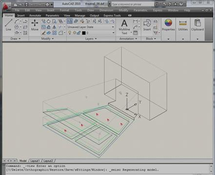
The Export/Import routine placed the various EASE drawing items and materials on different Layers in the AutoCAD drawing and assigned names and colors to the Layers that correspond to their EASE Wall Material names and colors. For details, go to the AutoCAD Format pull down menu and select Layers. This will open the AutoCAD Layer dialog shown below.
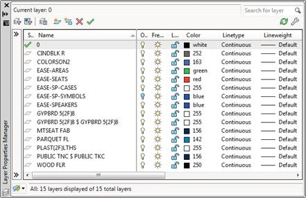
147
EASE 4.3 User’s Guide & Tutorial

Exporting SKP Files from EASE
Select Export SKP from the Tools pull down menu. This will open a window asking you for the name of the file you are creating and where you want it saved. Enter the requested information and then press Save to open the Export SKP screen shown here.
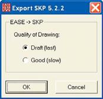
The EASE -> SKP section provides two options for the quality of the drawing export. Selecting Quality of Drawing: Draft (fast) is the quickest way to create a SketchUp drawing and can be used if there are no or only a few EASE Faces that are not exactly planar. This is the Default setting.
Quality of Drawing: Good (slow) will create a SketchUp drawing that groups all non-planar EASE Faces to create a higher quality rendering in SketchUp. This can take a long time to convert if there are many non-planer EASE Faces. Use this setting if the Draft setting has too many extra lines on the surfaces.
Importing EASE SKP Files into SketchUp
Open Google SketchUp and select Open from the File pull down menu. Then Browse to the SKP file you created for this exercise and press Open. That's all there is to it. The model is now in SketchUp as a drawing and can be manipulated in SketchUp just like any other SketchUp drawing.
Select Iso from the sub-menu Standard Views in the Camera pull down menu and then press Ctrl-Shift-E to display the drawing similar to the default 3D view in EASE. Note that all the elements of the EASE model were exported.
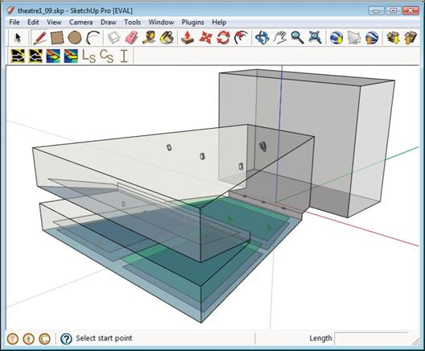
The Export/Import routine placed the various EASE drawing items and materials on different Layers in the SketchUp drawing and assigned names and colors to the Layers that correspond to their EASE Wall Material names and colors. For details, go to the SketchUp Window pull down menu and select Layers. This will open the SketchUp Layer dialog shown on the next page.
148
Chapter 6: Import / Export Capabilities
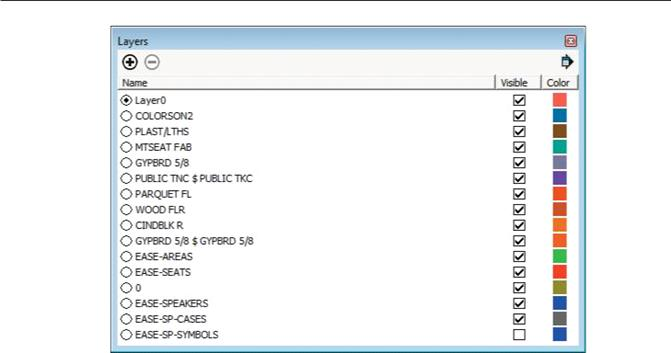
Importing AutoCAD® DXF Files into EASE
Importing AutoCAD 3D DXF drawing files into EASE is just as simple as exporting an EASE model to AutoCAD as a DXF file -- when the AutoCAD drawing has been properly formatted.
Unlike EASE 3.0 which could import only DXF drawing files created with 3D Faces, EASE 4.3 can import most AutoCAD drawing ele-ments. The main exceptions are Solids and Regions. Fortunately, they can easily be converted to elements that can be read by EASE using the XEDGES command in AutoCAD 2007 and later. In fact, if you have AutoCAD and want to model the room in AutoCAD and then Export it to EASE, you may want to construct the AutoCAD model using 3D Solids and then use the XEDGES command before exporting it to a DXF file that EASE can use.
At this point, you may want to take a few minutes to review the Import-Export-DXF section of the EASE Manual. It contains some very useful hints. You'll find the DXF section in Chapter 13.
The EASE Manual is stored as a PDF File under C:/ProgramFiles/EASE4.3/EasePath/EASE43 Manual. Additional information on Importing DXF files can also be found on the web at olsonsound.com/ease/index.html.
If you do not have AutoCAD and are working with an Architect who does, be sure to tell him of the limitations of the Import routine. In fact, you may want to copy this portion of the Tutorial and the DXF section of the EASE 4.3 Manual and give it to him as a guide.
Note: EASE like other similar programs cannot convert 2D drawings into a 3D model. However, 2D drawings exported as DXF files can be imported into EASE. Some users will import the room's 2D floor plan drawing into EASE and then use it as the foundation for their 3D EASE model.
To import a file, return to the EASE IMEX Import/Export program module (select Import/Export from the Main menu bar's File pull down menu) and select Import DXF/ SKP from the Tools pull down menu. This will open a window asking for the name and location of the file you want to Import.
We might as well use the Theater 1 DXF File we created under Export DXF. Browse to it and press OK.
This will bring up the Import DXF Setup screen shown on the next page.
149
EASE 4.3 User’s Guide & Tutorial
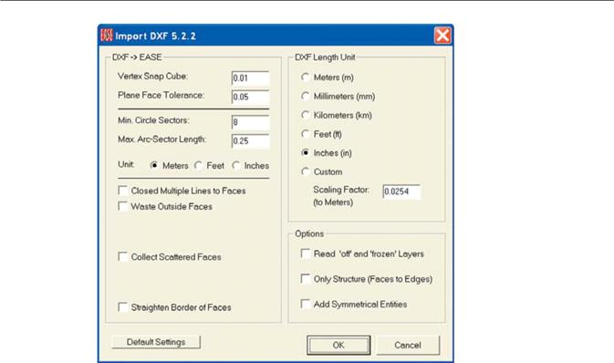
We will start by setting the Vertex Snap Cube to 0. This will bring in all the Vertex coordinates without altering their location. This is a good way to start, especially if you are importing an unknown model.
We'll accept the default settings for Plane Face Tolerance, Min. Circle Sectors and Max. Arc-Sector Length. We may want to change these later after we have had a look at the imported model. The Min. Circle Segments setting of 8, for example, is fine for importing small circles but may be too low for any large circles. We won't know until we have imported the project and looked at it.
We will also leave all the checkboxes unchecked. This will keep the import time to a minimum. This is a good practice to follow when you are importing an unknown file. Your first objective is to open the file to see what you have.
Press OK to close the window and import the DXF File.
The Assign Wall Material window shown on the next page will open.
In this case all of the materials were correctly assigned based on the Layer Names from the imported file.
Select the Assign from List or Assign from File button when a row is selected to change the Assigned EASE Material for that Layer in the imported file.
If you intend to import this project multiple times or will be importing a number of files that use the same set of Wall Materials then you should press the Save Map button to create a text-formatted map file that contains a table of layer names and Wall Material files. You can then use the Load Map button when importing the subsequent files to assign the materials to the same layers.
Refer to the EASE 4.3 Manual or the Help files for a description of the rest of the options and buttons in this window.
150
Chapter 6: Import / Export Capabilities
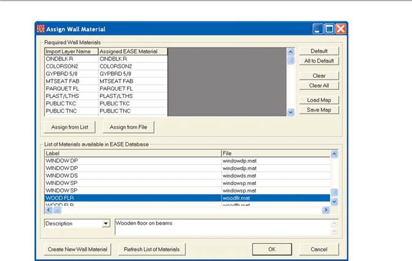
Select OK to close the dialog window. A Save File prompt will appear giving you the opportunity to save the File as an EASE Project File. You can either save it now or save it later, after you have had a chance to look more closely at the imported DXF File. We suggest taking a closer look before saving it, but the choice is yours. Save or Cancel the Save File prompt and the File will open in the IMEX window shown below.
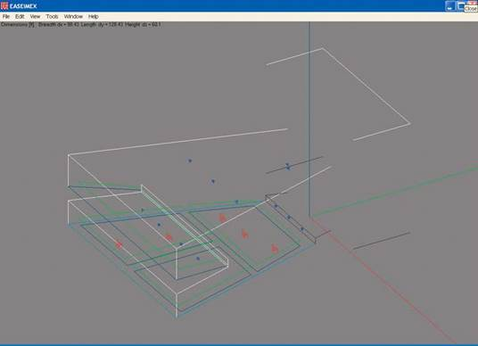
151
EASE 4.3 User’s Guide & Tutorial

If you have AutoCAD and had the opportunity to look at the model in AutoCAD, you will note that the item colors are the same as the colors were in AutoCAD.
Normally your first step would be to check the dimensions of the model to see if you used the right scaling for the Import. You'll find the overall dimensions listed in the upper left corner of the screen. If they appear to be much too large or too small, you can either import the file again or open the Edit pull down menu and select Rescale Project to rescale the model's dimensions.
Next, look carefully at the drawing. Does it look like you anticipated or do you suspect that some details or items are missing? If so, who-ever created the DXF File in AutoCAD, may have turned one or more Layers Off or Frozen them before creating the DXF File. Try import-ing the File again, only this time check Read “off” and “frozen” Layers in the Options section of the Import DXF window. This will "unfreeze" the Frozen Layers and turn "On" any that were turned "Off".
Be aware that some of the Faces/Edges may be difficult to see on small or low resolution screens because of the lack of contrast between the material colors and the background color of the IMEX window.. In most cases, the Faces/Edges are there, you just can’t see them. To verify that they are there Save the file and open it in Edit Project.
Now, it's time to save the file as an EASE Project File if you didn't save it immediately after importing it. If you didn't save it previously, go to the File pull down menu and select Apply Project Data. This will close the IMEX Import/Export program module and allow you to save the project in the EASE Main window.
Note that the preceding paragraph assumes you followed the Tutorial closely and had a project open when you entered the IMEX program module. If you opened the IMEX program module as a stand-alone module (without having first loaded a project) the Apply Project Data command line won't be available to you. You have to go to the File pull down menu and select Save As and then manually close the IMEX Import/Export program module.
Then select Open Project from the Edit pull down menu in the Main window, browse to the Project File you created, open the project and go to the Edit Project Data mode. Note that the Vertices and Faces are all there.
Importing Google SketchUp SKP Files into EASE
Importing Google SketchUp SKP drawing files into EASE is just as simple as exporting an EASE model to SketchUp as a SKP file when the SketchUp drawing has been properly formatted.
We might as well use the Theater 1 SKP File we created under Export SKP. Browse to it and press OK. This will bring up the Import SKP Setup screen shown below.
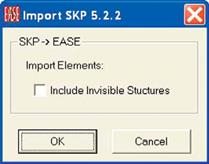
We will leave the Include Invisible Structures checkbox unchecked. If there are invisible elements in the SketchUp file that need to be im-ported this checkbox should be checked.
152
Chapter 6: Import / Export Capabilities

Press OK to Import the SKP File.
The Assign Wall Material window shown below will open.
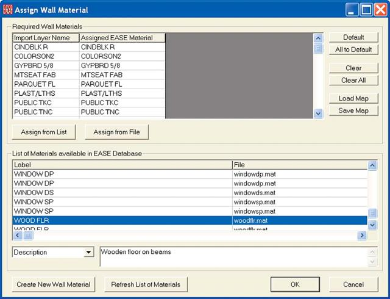
In this case all of the materials were correctly assigned based on the Layer Names from the imported file.
Select the Assign from List or Assign from File button when a row is selected to change the Assigned EASE Material for that Layer in the imported file.
If you intend to import this project multiple times or will be importing a number of files that use the same set of Wall Materials then you should press the Save Map button to create a text-formatted map file that contains a table of layer names and Wall Material files.
You can then use the Load Map button when importing the subsequent files to assign the materials to the same layers.
See the EASE4.3 Users Manual or the Help files for a description of the rest of the options and buttons in this window.
Select OK to close the dialog window and the File will open in the IMEX window shown on the next page.
153
EASE 4.3 User’s Guide & Tutorial

The File will open in the IMEX window.
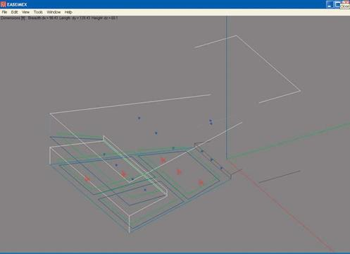
A Save File prompt will also appear giving you the opportunity to save the File as an EASE Project File. You can either save it now or save it later, after you have had a chance to look more closely at the imported SKP File. We suggest taking a closer look before saving it, but the choice is yours.
If you have SketchUp and had the opportunity to look at the model in SketchUp, you will note that the item colors are the same as the col-ors were in SketchUp.
Normally your first step would be to check the dimensions of the model to see if the right scaling was used for the Import. You'll find the overall dimensions listed in the upper left corner of the screen. If they appear to be much too large or too small, you can open the Edit pull down menu and select Rescale Project to rescale the model's dimensions.
Be aware that some of the Faces/Edges may be difficult to see on small or low resolution screens because of the lack of contrast between the material colors and the background color of the IMEX window.. In most cases, the Faces/Edges are there, you just can’t see them. To verify that they are there Save the file and open it in Edit Project.
Now, it's time to save the file as an EASE Project File if you didn't save it immediately after importing it. If you didn't save it previously, go to the File pull down menu and select Apply Project Data. This will close the IMEX Import/Export program module and allow you to save the project in the EASE Main window.
Note that the preceding paragraph assumes you followed the Tutorial closely and had a project open when you entered the IMEX program module. If you opened the IMEX program module as a stand-alone module (without having first loaded a project) the Apply Project Data command line won't be available to you. You have to go to the File pull down menu and select Save As and then manually close the IMEX Import/Export program module.
Then select Open Project from the Edit pull down menu in the Main window, browse to the Project File you created, open the project and go to the Edit Project Data mode. Note that the Vertices and Faces are all there.
154
Chapter 6: Import / Export Capabilities

Some Hints For Those Who Do Not Have AutoCAD
Now, let's take another look at some of the problems you may encounter when you Import an unknown file.
Importing an AutoCAD DXF File of unknown properties when you don't have AutoCAD and can't look at the drawing or modify it can be a real challenge. Fortunately EASE 4.3 includes a number of tools that can help you.
What if the File doesn't Import? This is a sign that the DXF does not have any importable elements, or that all layers are frozen or the File format is wrong. All you can do is to go back to the source of the DXF File and review with them what you need.
What if you can see a multitude of lines in the drawing, but very few Faces? Try importing the drawing again, only with the Closed Multiple Lines to Faces option turned On in the Import DXF Setup window. The import routine will then create a Face from any set of lines, polylines and arcs that are planar and when connected end-point to start-point they enclose an area.
What if the drawing includes a multitude of small Faces? Try the Collect Scattered Faces option. Collect Scattered Faces will create a single Face from any set of Faces that are planar and completely fill an area.
When you select Collect Scattered Faces, two new options will appear, Cut Intersecting Faces and Overlap Test. Collect Scattered Faces may produce Faces that intersect (have one Face going through another without creating an intersection). Cut Intersecting Faces will cut these Faces into pieces.
Collect Scattered Faces may also produce Faces that look incomplete. When this happens, check the Overlap Test. This should solve the problem.
What if Collect Scattered Faces only eliminated a few of the small Faces? Try rerunning the import routine with a larger Plane Face Tolerance. This will enable the Collect Scattered Faces option to combine more Faces.
What if the drawing has a number of Face borders that contain a number of Vertices? Try the Straighten Border of Faces option. The import routine will look for these Vertices and delete any that are on the Face border between the corner Vertices.
What if the Straighten Border of Face Option only deletes a few of the surplus Vertices? Try rerunning the import routine with a larger Vertex Snap Cube.
What if the drawing includes a number of "Outside" Faces? Try the Waste Outside Faces option. Waste Outside Faces uses a Ray Tracing algorithm to detect inside Faces and mark outside Faces. Outside Faces are assigned a "Waste" wall material in EASE. They are then relatively easy to delete using the Project's Face Table.
If there are a large number of outside Faces and you have AutoCAD, another way to get rid of them is to Export the project back to Auto-CAD. They will all be placed on a Waste layer in AutoCAD and can then easily be deleted by deleting the Layer.
The Ray Tracing algorithm also detects Two-Fold Faces and corrects the orientation of Faces that are improperly oriented.
One word of caution concerning Waste Outside Faces. It uses a so-called Spy-Point as the source of the Detection Rays. Without Auto-
CAD, you have no way of knowing where the Spy-Point(s) is (are) located or how many of them are included. The odds are that the Auto-
CAD drawing won't have any Spy-Points, but you never know until you have tried it.
If the AutoCAD drawing doesn't include any Spy-Points, EASE will place a Spy-Point in the geometric center of the model. Be careful on this one. If you have an L shaped room or some other strange shape, it's possible the geometric center may be outside the room.
Selecting Waste Outside Faces will introduce a sub-menu giving you the opportunity to set the Detection Order for the Ray Tracing Algo-rithm or to use the Auto setting. The Auto setting will run the routine until it assumes that all internal Faces have been found. This can take a long time in models having a large number of Faces. We suggest starting with a low Detection Order.
155
EASE 4.3 User’s Guide & Tutorial

What if only one side of the room imports? Return to the Import DXF window and check Add Symmetrical Entities in the Options sec-tion. The Import routine will then put in the other side of the room as a mirror image.
Can I import just Edges and not Faces? If the model is very complex, it may be easier to just import the structure of the model without any of the planar lines being automatically turned into Faces. In the Import DXF window check the Only Structure (Faces to Edges) in the Options section. The Import routine will only import the edges of the surfaces as EASE Edges. You can then use the coordinates of the Edges to draw your own EASE Faces or Extrude the edges to create Faces. After you are done creating all the Faces you can delete all the Edges using the Edge Table.
As soon as you are satisfied that you have a usable drawing, your first step will probably be to determine if there are any Holes in the Room. The odds are that there may be a few as some of the Faces may be incorrectly oriented. This should be easy to correct using the Find Holes/Fix Holes technique we learned while building Tutorial 1.
If you did not assign materials to all the layers using the Assign Wall Material window then the Color and Material Coupled feature of EASE will simplify the task of assigning materials based on the color of the surface. Open Tables under the Edit pull down menu and select Faces. This will open the Edit Face Table. The Color and Material Coupled command is under the Tools pull down menu. It enables you to change the material of all Faces having the same color by changing the material on just one of them. It's a great time saver if the model has a large number of Faces.
If the AutoCAD drawing didn't include material colors, the simplest thing to do is select one of the Faces, then right click to open the Mouse Menu (or use the Ctrl + F3 key command) to open the Change All Same window and insert the material used on the highest num-ber of Faces. This will take care of all the Faces that use that material quickly and reduce the number of Faces you have to do individually.
156